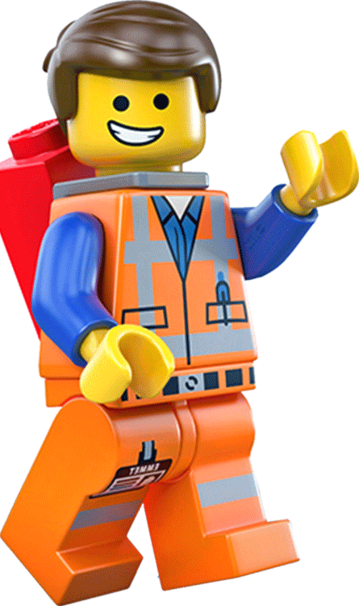

Una aventura
de cambio
Hola soy Gustavo heredero e hijo mayor de Gander considerado el mejor carpintero y fabricante de juguetes de madera. Estoy aquí para contarte mi experiencia de cambio a través de acertijos y aventura. Espero que mi relato te sea útil para reinventarte enfocándote básicamente en el trabajo de equipo y no ser un individualista.
¡Vamos a explorar esta aventura!